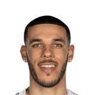
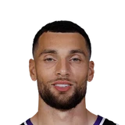

guard Zach LaVine said of life without Williams.
“Some games Zo (Lonzo Ball) will come in and play the four or I’ll play the four and it’s like, ‘OK, we’ve got to get a stop or outscore them.’ One of the two.”


Lonzo Ball on Zach LaVine, and Zach LaVine on Lonzo Ball: every quote in the archive, newest first. Each one links to its original source.
guard Zach LaVine said of life without Williams.
“Some games Zo (Lonzo Ball) will come in and play the four or I’ll play the four and it’s like, ‘OK, we’ve got to get a stop or outscore them.’ One of the two.”
Zach LaVine on Lonzo Ball return:
“It was emotional in a happy way. We made sure we got him the game ball because that’s a big moment. Nobody has come back from what he’s coming back from.”
Lonzo Ball on Zach LaVine's injury:
“You look at the big picture. ... I think it’s gonna make him a better human. He’s gonna come back and do his thing for sure. I’m not worried about that.”